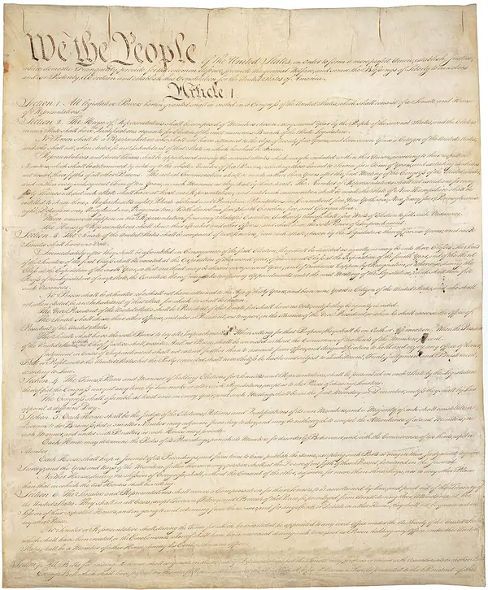
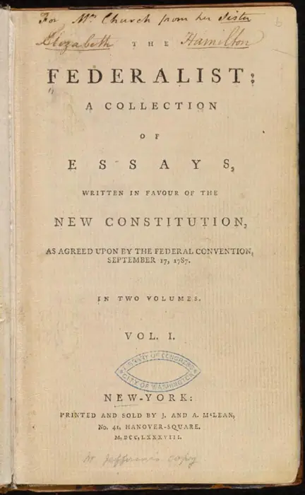

Three branches, ten amendments and one very powerful idea.
Reveal the meaning of each word, then say it back in your own words. (Which of these eight belong to making a government, and which to limiting it?)
Read each part. After it, answer the quick check from memory first, then reveal, then discuss.

After independence the thirteen states joined together under the Articles of Confederation, ratified in 1781. The central government they created was deliberately weak, and it soon proved too weak: it struggled to raise money, to keep order, or to speak with one voice to foreign powers. By 1787 many leaders felt the experiment was in danger.
That summer, delegates met in secret in Philadelphia, in a hot room with the windows shut. They were supposed to repair the Articles. Instead they wrote a new constitution. It was signed in September 1787 and sent to the states for approval, where it faced fierce opposition; supporters defended it in a series of essays, The Federalist Papers, written by Hamilton, Madison and Jay. In 1788 enough states ratified it, and it took effect the following year.
1. What was wrong with the Articles of Confederation?
2. What were The Federalist Papers for, and who wrote them?
1. The central government was too weak to raise money, keep order or speak with one voice to other countries.
2. They were essays defending the new Constitution, written by Hamilton, Madison and Jay.
The Constitution begins “We the People”, and its design is built on a fear of concentrated power. Authority is divided among three branches: Congress makes the laws, the president carries them out, and the courts interpret them. Each branch is given ways to check the others. A president can veto a bill, but Congress can override that veto with a two-thirds vote in both houses. The president appoints judges, but the Senate must approve them.
Critics of the draft objected that it protected the government well and the people poorly. As a condition of support, a list of guaranteed rights was promised, and in 1791 the first ten amendments, known as the Bill of Rights, were added. They protect freedoms such as speech, religion and a fair trial. Changing the Constitution after that was made deliberately difficult: under the usual route, an amendment must be proposed by two-thirds of Congress and approved by three-quarters of the states.
1. Name the three branches and say what each one does.
2. How can the Constitution be amended?
1. Congress makes laws, the president carries them out, and the courts interpret them.
2. Under the usual route, an amendment must be proposed by two-thirds of Congress and approved by three-quarters of the states.
One question the Constitution did not clearly answer was who decides when a law breaks it. In the case of Marbury v. Madison in 1803, Chief Justice John Marshall gave the answer: the Supreme Court does. The Court, he wrote, could strike down acts of Congress that conflicted with the Constitution. This principle, judicial review, is not written anywhere in the text, yet it has shaped American life ever since, from civil rights to elections.
The Court has had nine justices since 1869. They are appointed for life by the president, with the consent of the Senate, which is why each vacancy becomes a national political battle. The Constitution itself has been amended only twenty-seven times in more than two centuries; the most recent, the 27th, was proposed in 1789 and was not ratified until 1992.
1. What did Marbury v. Madison establish?
2. Why is each Supreme Court vacancy such a big political event?
1. Judicial review: the Court can strike down acts of Congress that conflict with the Constitution.
2. Because justices are appointed for life by the president with Senate approval, so each appointment can shape the law for decades.
Constitutions, laws and processes are described in the passive voice because the action matters more than the person. “A bill must be approved by both houses” is more formal, and more general, than “both houses must approve a bill”.
Put the verb in brackets into the correct passive form. Say each sentence aloud.
1. The Constitution (ratify) in 1788.
2. The Bill of Rights (add) in 1791.
3. A bill (can / veto) by the president.
4. The Constitution (amend) twenty-seven times so far.
5. Supreme Court justices (appoint) for life.
1. was ratified
2. was added
3. can be vetoed
4. has been amended
5. are appointed
Rewrite each active sentence in the passive, leaving out the agent unless it matters. Type your version, then check a model answer.
1. Delegates drafted the Constitution in secret.
2. The states must approve any amendment.
3. Congress can override a presidential veto.
4. Nobody has repealed the First Amendment.
1. The Constitution was drafted in secret.
2. Any amendment must be approved by the states. (Keep by the states: who approves matters.)
3. A presidential veto can be overridden by Congress. (Keep by Congress.)
4. The First Amendment has not been repealed.
Each sentence has one mistake in the passive. Find it and rewrite the sentence correctly.
1. The Constitution was wrote in secret.
2. A bill must be approved both houses.
3. The 27th Amendment has ratified in 1992.
1. The Constitution was written in secret. — past participle, not past simple.
2. A bill must be approved by both houses. — the agent needs by.
3. The 27th Amendment was ratified in 1992. (Or: has been ratified, without a date.) — a finished event with a date takes the past simple passive.
Hold on to this: be + past participle, in the right tense, and by only when the doer matters.
1. From last time: name the four linkers of contrast and say which grammar follows each.
2. Two lectures ago, which tense described what had already happened before another past event? Give an example about the Mayflower.
3. Give one hedged definition of the term “the canon”.
1. Although + clause; despite + noun or -ing; whereas + clause (joining two ideas); nevertheless + comma at the start of a new sentence.
2. The past perfect: The passengers had spent more than two months at sea before they reached land.
3. For example: The canon is generally regarded as the list of works accepted as the most important in a field.
Pick two of these cards and speak about each for at least a minute.
Write four formal sentences describing the rules of a club you would like to set up. Use the passive in each.
From memory, with nothing in front of you:
Think about it: Which of the four lectures in this course so far has been easiest to remember, and what does that tell you about how you learn best?
Images from Wikimedia Commons: Constitution of the United States - DPLA - 9ca804144bd5965e992ae3528bc3c6a3 (page 1) (Constitutional Convention, Public domain); The Federalist (1st ed, 1788, vol I, title page) - 02 (Publius (pseudonym) [Alexander Hamilton, John Jay, James Madison]., Public domain); US Capitol east side (Martin Falbisoner, CC BY-SA 3.0); John Marshall by Henry Inman, 1832 (Henry Inman, Public domain).